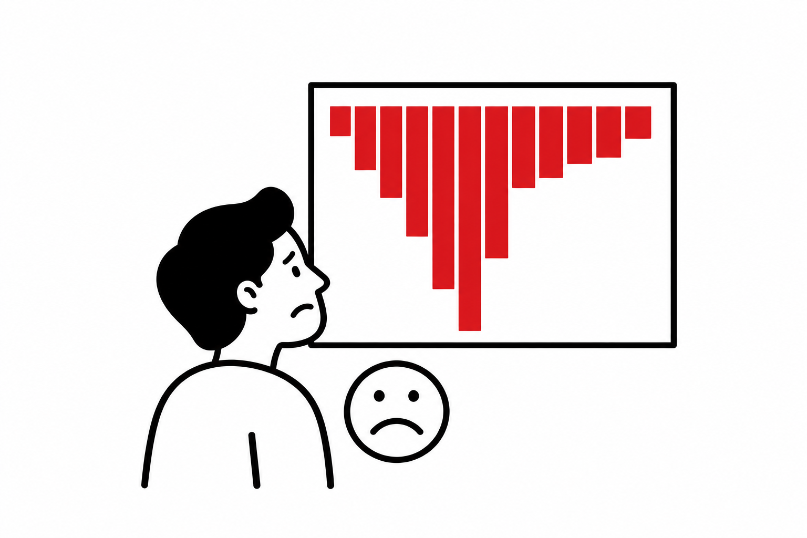
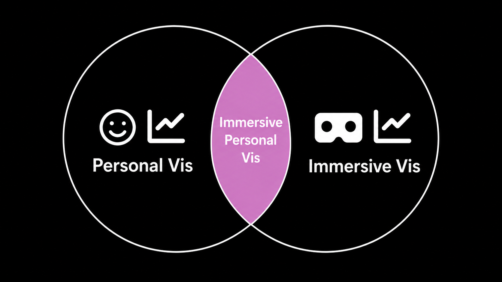

Made to Feel accepted to IEEE VIS
“Made to Feel” was accepted to IEEE VIS 2026 as a short paper.
News Archive
Aug 2026

“Made to Feel” was accepted to IEEE VIS 2026 as a short paper.

“Charting the Immersive Self” was accepted to IEEE VIS 2026 as a full paper.
Jul 2026

Isabella presented her poster, “Affective Visual Metaphors” at SURC.
May 2026

Diego and Isabella shared their work-in-progress, “Data Characters”, at the symposium.

Keke taught her first INST 462: Introduction to Data Visualization to 85 undergrads.